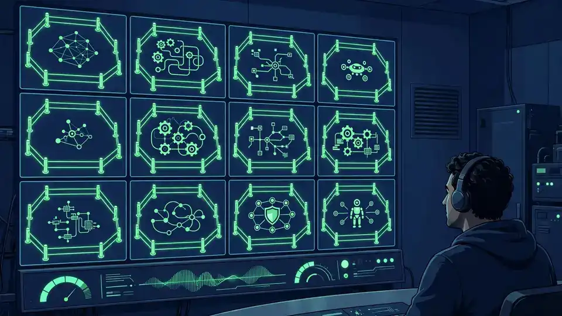

82% of executives say they can govern AI agents — only 26% can resolve conflicts between them: the OutSystems, CIO Dive and KPMG report
- Who: OutSystems, which describes itself as an Agentic Systems Platform, in collaboration with CIO Dive and KPMG.
- What: The report Engineering Business Outcomes: The Shift to Agentic Systems, on enterprise readiness for AI agents in production.
- When: Released October 16, 2026, via PRNewswire.
- The gap: 82% of executives say they can keep pace with governing, integrating and monitoring AI agents as they move into production — only 26% say they are well prepared to resolve conflicts across agents, systems and automated workflows.
- The outlook: 71% of executives expect applications to coordinate work across systems, teams and business processes, or support more complex, multi-step workflows, over the next five years.
- The prescription: build control into the platform itself rather than reviewing agent behavior after the fact.
Enterprise AI agents are moving from pilot projects to production — and executives are far less ready than they think. A new report released today by OutSystems with CIO Dive and KPMG finds that 82% of executives believe their organizations can keep pace with governing, integrating and monitoring AI agents as they move into production. But only 26% say they are well prepared to resolve conflicts across agents, systems and automated workflows. PRNewswire, ASEAN Gazette
The 82% vs. 26% gap
The headline finding of Engineering Business Outcomes: The Shift to Agentic Systems is the distance between confidence and capability. Governance — the policies, oversight and monitoring around AI agents — feels solved to most executives. Actual operational readiness for what agents do when they collide in live systems is a different story: just over a quarter of executives say their organizations handle it well.
The report's framing is that agentic AI in the enterprise has hit an inflection point. Development tools are more accessible, economic pressure to automate is intensifying, and organizations are shifting from experimentation toward deliberate, enterprise-wide deployment. That shift is exactly what turns agent conflicts from an edge case into a daily operational problem.
Production changes the question
The new data points toward multi-agent, multi-system work as the default shape of enterprise AI. Over the next five years, 71% of executives expect applications to coordinate work across systems, teams and business processes, or to support more complex, multi-step workflows. An agent that reliably books a meeting is a demo; a mesh of agents that touch finance, IT and customer data without stepping on each other is a production system — and the latter needs a different kind of engineering.
That is the reading OutSystems is pushing: the capabilities enterprises need next are the ones for engineering, governing and orchestrating trusted agentic systems that deliver measurable business outcomes — not just building the agents themselves.
Control at runtime, not review
OutSystems CIO Tiago Azevedo put the lesson in practical terms: "That gap is where the real work happens. Having put agents to work across the business, I've learned that safety comes from building control into the platform, not reviewing it afterward." His argument is that enterprises enforcing policy while agents run will move faster, because they won't have to stop and ask whether they can trust what they built.

Why this matters now
The report lands at a moment when agent governance is getting attention from every direction: researchers signing open letters on containment for cyber-capable models, regulators circling, and enterprises like Accenture reportedly capping per-person AI spend as costs bite. Confidence without conflict-readiness is a familiar enterprise story — the cloud transition had its own version — but agents raise the stakes, because a conflict between automated workflows can move money, data and decisions before anyone reviews the log.
Whether the 26% figure holds up under independent scrutiny, the direction of travel is hard to argue with: production agentic AI needs orchestration, not just deployment. The report's core message is that governance is an engineering problem now — something you build into the system, not something you inspect afterward.
Frequently asked questions
What did the OutSystems, CIO Dive and KPMG report measure?
It measured the gap between confidence and readiness in enterprise AI agent deployments. 82% of executives said their organizations can keep pace with governing, integrating and monitoring AI agents as they move into production — but only 26% said they are well prepared to resolve conflicts across agents, systems and automated workflows.
What does “resolving conflicts between agents” mean?
In the report’s framing, it is the ability to handle situations where multiple agents, enterprise systems and automated workflows collide or work at cross-purposes in production. OutSystems CIO Tiago Azevedo put it this way: “That gap is where the real work happens … safety comes from building control into the platform, not reviewing it afterward.”
What is the five-year outlook for agentic AI in the enterprise?
The report found that 71% of executives expect applications to coordinate work across systems, teams and business processes — or support more complex, multi-step workflows — over the next five years, as organizations shift from experimentation to deliberate, enterprise-wide deployment.